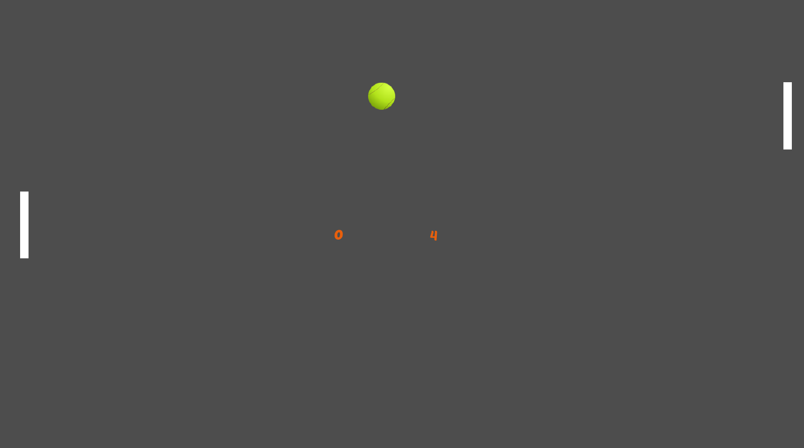

bugs de SENA pong
- las paletas retroceden si la bola toca el borde superior
- cuando la pelota toca una esquina de la pelota hace un recorrido mur vertical y se demora
- el juego no tiene fin
- la pelota no es fluida
- la pelota no esta centrada
recomedaciones para SENA Pong
- se recomienda que al hacer gol se efectue un efecto visual y de sonido
- se sugiere cambiar el fondo, mo ntan gris
- agregar efectos cuando se golpea la pelota
- definir el limite de puntos para ganar y de tiempo
- no hay contraste de colores entre las paletas y la pelota
- implementar luces a la pelota
- aumento de dificultad de una manera gradual o progresiva
